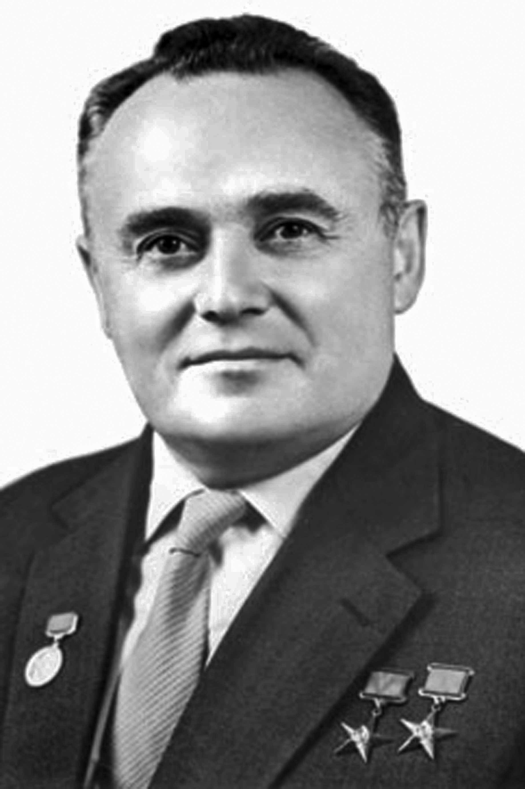
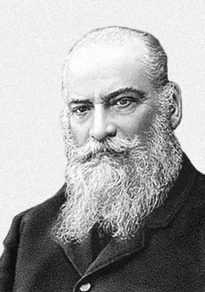
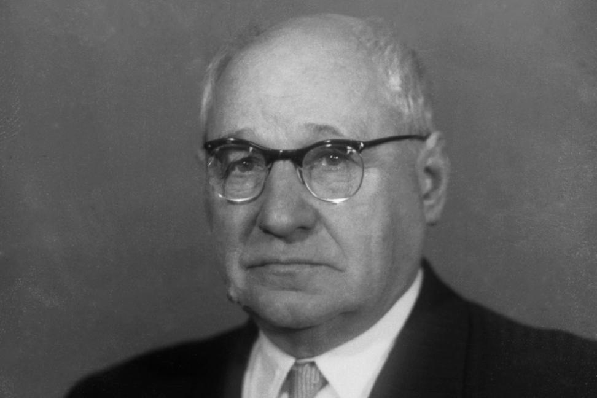
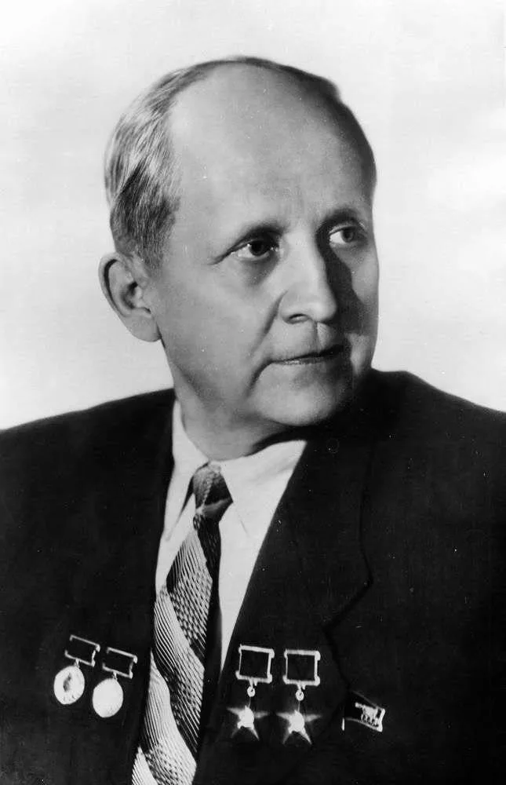
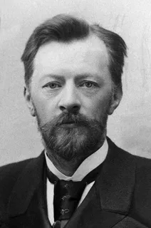
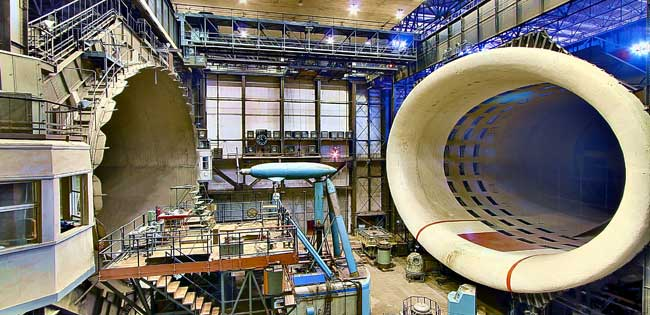
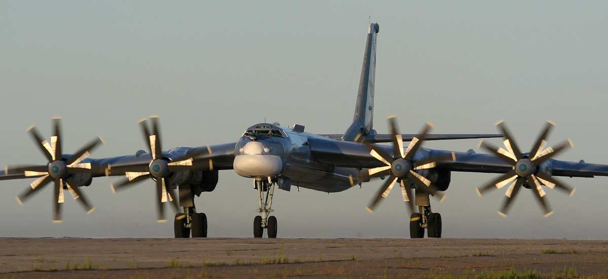
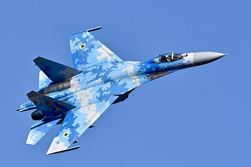
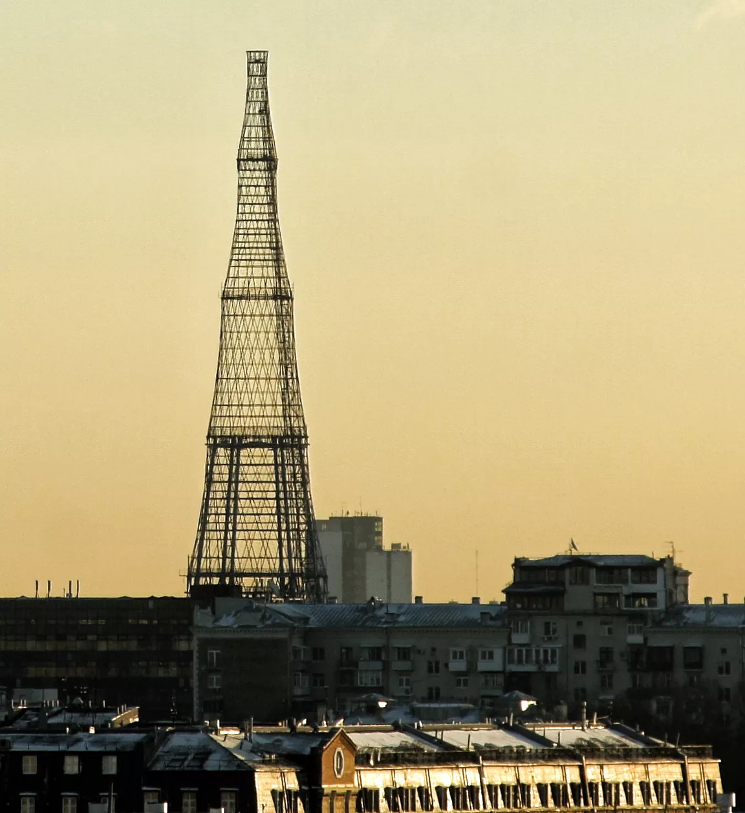

Великие выпускники
МГТУ им. Н.Э. Баумана
Инженеры, опередившие время — от первых планеров до космических кораблей и гиперболоидных башен
Московский государственный технический университет имени Н.Э. Баумана — кузница инженерной элиты России. Основанный в 1830 году, он на протяжении почти двух столетий воспитывает гениев, чьи имена вписаны золотыми буквами в историю мировой науки и техники. Стены этого легендарного вуза помнят лекции выдающихся профессоров, а его выпускники создавали самолёты, ракеты, космические корабли, нефтепроводы и уникальные архитектурные сооружения. Наша выставка посвящена пятерым выпускникам, которые изменили ход человеческой цивилизации. Каждый из них прошёл свой уникальный путь — от студенческой скамьи до мирового признания. Их объединяет одно: верность инженерному делу, смелость мысли и желание сделать невозможное реальностью.
Приглашаем вас в путешествие по истории технического прогресса. Эти люди доказали, что русская инженерная школа — лучшая в мире.
Герои выставки

Сергей Павлович Королёв
Основоположник практической космонавтики
Подробнее →
Николай Егорович Жуковский
Отец русской авиации
Подробнее →
Андрей Николаевич Туполев
Создатель гигантов неба
Подробнее →
Павел Осипович Сухой
Гений реактивной эры
Подробнее →
Владимир Григорьевич Шухов
Первый инженер империи
Подробнее →Сергей Павлович Королёв
Основоположник практической космонавтики
Биография
Ранние годы и учёба. Сергей Павлович Королёв родился 12 января 1907 года в Житомире в семье учителя. С детских лет он проявлял необычайный интерес к технике и авиации. Ещё в гимназии Сергей начал конструировать простейшие планеры. В 1924 году он поступил в Киевский политехнический институт, но через два года, стремясь получить лучшее инженерное образование, перевёлся в Московское высшее техническое училище имени Н.Э. Баумана. На аэромеханическом факультете МВТУ Королёв слушал лекции выдающихся профессоров, в том числе самого Андрея Туполева. Он с головой ушёл в студенческое конструкторское бюро, где его талант заметили уже в первые годы учёбы.
Путь к ракетной технике. Дипломную работу Королёв защитил в 1929 году, представив проект лёгкого самолёта. Однако вскоре его интересы переместились в совершенно новую область — реактивное движение. В 1931 году вместе с Фридрихом Цандером он организовал Группу изучения реактивного движения (ГИРД). Уже в 1933 году под его руководством была запущена первая советская жидкостная ракета ГИРД-09. Казалось, впереди блестящее будущее, но в 1938 году Королёв был репрессирован и отправлен в лагеря. Даже там он продолжал инженерную работу, а в 1942 году его перевели в «шарашку» — закрытое конструкторское бюро при тюрьме.
Главный конструктор. Освободившись в 1944 году, Королёв с удвоенной энергией принялся за разработку баллистических ракет. В 1946 году он был назначен главным конструктором ОКБ-1. Под его руководством были созданы первые отечественные ракеты дальнего действия, а также ракета Р-7, которая стала основой для всей космической программы. Королёв воспитал целую плеяду учёных и инженеров — его учениками были Василий Мишин, Борис Чертюк, Константин Бушуев и многие другие, продолжившие его дело. Сергей Павлович ушёл из жизни 14 января 1966 года во время плановой операции, не дожив всего два дня до своего 59-летия. Похоронен на Красной площади у Кремлёвской стены.
Главное достижение
Запуск первого искусственного спутника Земли 4 октября 1957 года — событие, которое потрясло мир и открыло космическую эру человечества. Именно сигнал «Бип-бип» разнёсся по всей планете, ознаменовав рождение новой эпохи. Это достижение стало возможным благодаря гению Королёва и его команды. А уже 12 апреля 1961 года под его руководством был создан корабль «Восток», на котором Юрий Гагарин совершил первый в истории полёт человека в космос. За этими легендарными словами «Поехали!» стоял титанический труд Главного конструктора, чьё имя долгие годы оставалось секретным. Только после его смерти мир узнал, кто был тем человеком, который открыл дорогу к звёздам.

Николай Егорович Жуковский
«Отец русской авиации», основоположник аэродинамики
Биография
Детство и становление. Николай Егорович Жуковский родился 17 января 1847 года в селе Орехово Владимирской губернии в семье военного инженера. С детства он проявлял способности к математике и механике. В 1864 году Жуковский поступил в Императорское Московское техническое училище (ИМТУ), которое окончил с отличием в 1868 году. После этого он углублённо занимался механикой, гидравликой и постепенно пришёл к новой тогда науке — аэродинамике.
Научный подвиг. Почти 50 лет своей жизни Жуковский отдал преподаванию в родном училище. Он воспитал несколько поколений выдающихся инженеров, среди которых — Андрей Туполев, Павел Сухой, Борис Стечкин. В 1902 году под руководством Жуковского была построена первая в Европе аэродинамическая труба, а в 1904 году — первый в мире аэродинамический институт в посёлке Кучино под Москвой. В 1909 году он организовал Воздухоплавательный кружок при МВТУ, который стал колыбелью русской авиации. Именно на базе его лабораторий и кружков позже был основан Центральный аэрогидродинамический институт (ЦАГИ) — кузница мировой авиации, существующая и поныне.
Наследие. Жуковский был не только гениальным теоретиком, но и блестящим педагогом. Он говорил: «Мы верим, что наша русская наука даст миру много нового и великого». Его труд «О парении птиц» (1891) лёг в основу расчётов аэродинамических сил. В 1918 году по инициативе Жуковского были созданы авиационные техникумы, преобразованные позже в Военно-воздушную инженерную академию, которая сегодня носит его имя. Николай Егорович скончался 17 марта 1921 года, оставив после себя целую научную школу и фундамент, на котором строится вся современная авиация. В.И. Ленин назвал его «отцом русской авиации» — это звание Жуковский носил по праву.
Главное достижение
Теорема Жуковского о подъёмной силе крыла (1906 год) — фундаментальный закон аэродинамики, который гласит: подъёмная сила крыла равна произведению плотности воздуха, скорости потока и циркуляции скорости. Эта формула стала основой для расчёта любых летательных аппаратов тяжелее воздуха. Без открытия Жуковского невозможны были бы ни первый самолёт братьев Райт, ни гигантские авиалайнеры, ни сверхзвуковые истребители. По сути, Жуковский дал инженерам формулу, которая «поднимает в небо» всё, что тяжелее воздуха. Кроме того, он разработал теорию винта и теорию продольной устойчивости самолёта, которые используются в авиастроении до сих пор.

Андрей Николаевич Туполев
Гений цельнометаллического самолётостроения
Биография
Юность и увлечение авиацией. Андрей Николаевич Туполев родился 10 ноября 1888 года в селе Пустомазово Тверской губернии в семье нотариуса. В 1908 году он поступил в Императорское МТУ и с первых же дней попал в Воздухоплавательный кружок Николая Жуковского. Это определило всю его дальнейшую судьбу. Ещё студентом Туполев построил свой первый планер «А.Н.Т.», на котором самостоятельно совершил несколько полётов. В 1916 году он участвовал в проектировании первого в России аэродинамического трубного стенда.
Творческий путь и испытания. После окончания училища с отличием Туполев остался работать в аэродинамической лаборатории и ЦАГИ. Именно он первым в стране начал использовать кольчугалюминий (лёгкий дюралюминий) вместо дерева и тяжелого железа, что позволило создавать огромные цельнометаллические самолёты. В 1925 году под его руководством был создан бомбардировщик ТБ-1, а в 1932-м — ТБ-3, ставший основой советской дальней авиации. Однако жизнь нанесла тяжёлый удар: в 1937 году Туполев был репрессирован по сфабрикованному обвинению. Несмотря на заключение, он продолжал работать в ЦКБ-29 («шарашке»), где спроектировал бомбардировщик Ту-2. Освободившись в 1941 году, Туполев продолжил свою грандиозную работу.
Эпоха «Ту». Всего под руководством Туполева спроектировано более 100 типов самолётов, 70 из которых пошли в серийное производство. Среди его творений: стратегический бомбардировщик Ту-95, сверхзвуковой бомбардировщик Ту-160, пассажирский Ту-154 — самый массовый советский реактивный лайнер. А в 1968 году взлетел Ту-144 — первый в мире сверхзвуковой пассажирский самолёт. Андрей Николаевич воспитал плеяду выдающихся конструкторов: Владимира Мясищева, Павла Сухого, Сергея Ильюшина. Он ушёл из жизни 23 декабря 1972 года, похоронен на Новодевичьем кладбище. Самолёты марки «Ту» по сей день остаются символом надёжности и мощи.
Главное достижение
Самолёт Ту-95 («Медведь» по классификации НАТО) — уникальный турбовинтовой стратегический бомбардировщик-ракетоносец, остающийся на вооружении более 65 лет. Он был принят на вооружение в 1956 году и до сих пор несёт боевое дежурство! Ту-95 установил мировой рекорд дальности полёта среди серийных самолётов, преодолев без дозаправки 17 000 км. В 2010 году он побил собственный рекорд, пролетев 30 000 км с тремя дозаправками за 43 часа. Этот самолёт стал символом холодной войны и до сих пор не имеет аналогов по соотношению «дальность — экономичность». Его винты являются самыми мощными в мире, а восемь соосных винтов создают неповторимый рёв, который невозможно спутать ни с чем.

Павел Осипович Сухой
Гений реактивной эры, создатель легендарных истребителей
Биография
Путь в авиацию. Павел Осипович Сухой родился 22 июля 1895 года в небольшом городке Глубокое Витебской губернии (ныне Беларусь) в семье учителя. В 1915 году он поступил на физико-математический факультет Московского университета, но после революции решил получить инженерное образование. В 1921 году Сухой стал студентом МВТУ им. Баумана. Здесь его наставниками были сам Николай Жуковский и молодой, но уже известный Андрей Туполев. В 1925 году Сухой с отличием защитил диплом и был приглашён на работу в ЦАГИ, в бригаду Туполева.
Собственное КБ и испытания. В 1939 году Павел Осипович возглавил самостоятельное конструкторское бюро. Первые самолёты Сухого — Су-1, Су-2 — проявили себя достойно, но настоящий прорыв начался после войны. Сухой был одержим идеей реактивных полётов и созданием истребителей с треугольным крылом. Однако путь был тернист: в 1949 году его КБ расформировали, и Сухой вернулся к Туполеву. Но уже в 1953 году КБ было восстановлено, и начался звёздный час Павла Осиповича. Созданные им реактивные истребители Су-7, Су-9, Су-11, Су-15 стали основой советской ПВО на десятилетия вперёд. Сухой разработал 50 оригинальных конструкций, 34 из которых были построены и поднялись в небо.
Наследие и признание. Павел Осипович Сухой ушёл из жизни 15 сентября 1975 года. Его дело продолжило КБ, которое сегодня носит его имя — компания «Сухой», часть Объединённой авиастроительной корпорации. Именно благодаря Сухому российская авиация получила машины, которые до сих пор считаются одними из лучших в мире. Его ученики и последователи создали Су-30, Су-34, Су-35 и легендарный Су-57 — истребитель пятого поколения. Павел Сухой был дважды Героем Социалистического Труда, лауреатом Ленинской и Государственных премий. Он навсегда вошёл в историю как человек, который превратил букву «Су» в символ российского могущества в небе.
Главное достижение
Истребитель Су-27 — признанный лучшим истребителем четвёртого поколения в мире. Этот самолёт, впервые поднявшийся в небо в 1977 году (уже после смерти Сухого, но созданный на основе его идей), установил 27 мировых рекордов высоты и скороподъёмности. Самым известным стал рекорд 1986 года, когда лётчик-испытатель Виктор Пугачёв на Су-27 выполнил «кобру Пугачёва» — манёвр, который считался невозможным. Су-27 до сих пор остаётся основой ВКС России в своих модификациях (Су-30, Су-35). Он состоит на вооружении Китая, Индии, Вьетнама и многих других стран. Су-27 — это не просто самолёт, а целая платформа, на основе которой созданы десятки модификаций, включая палубный Су-33 и бомбардировщик Су-34.

Владимир Григорьевич Шухов
«Первый инженер Российской империи», гений-универсал
Биография
Ранние годы и образование. Владимир Григорьевич Шухов родился 28 августа 1853 года в Курске в дворянской семье. С детства он демонстрировал феноменальные математические способности. В 1871 году Шухов поступил в Императорское Московское техническое училище, которое окончил в 1876 году с золотой медалью. Ещё в студенческие годы он придумал конструкцию водотрубного котла — задолго до того, как подобные разработки появились за рубежом. После окончания училища Шухов мог уехать в Америку к самому Томасу Эдисону, но предпочёл остаться в России.
Универсальный гений. Шухов был не просто инженером — он был универсальным гением: математиком, механиком, химиком, архитектором. За свою жизнь он создал около 200 уникальных изобретений и конструкций. В 1879 году он изобрёл и построил первый в мире нефтепровод (Баку — Батуми). Позже он разработал промышленный крекинг — технологию переработки нефти в бензин, без которой невозможно представить современный мир. Шухов создал стальные сетчатые перекрытия (патенты 1895–1899 годов), которые позволяли перекрывать огромные пролёты без дополнительных опор. Он спроектировал и построил знаменитую гиперболоидную башню на Шаболовке (1922 год), а также спас от разрушения древние соборы Московского Кремля. Шухов оставил после себя более 60 трудов, посвящённых сопротивлению материалов, гидравлике, теплотехнике.
Признание. Владимир Григорьевич Шухов был избран почётным членом Академии наук СССР, Героем Труда. Его идеи опережали время на 50–70 лет: только в 1970-х годах инженеры всего мира начали массово использовать его гиперболоидные конструкции. Сегодня гиперболоидные башни строятся в Японии, Китае, США, но первым был Шухов. Он ушёл из жизни 2 февраля 1939 года в Москве. В 2008 году журнал «Popular Mechanics» назвал Шухова «самым недооценённым инженером всех времён». Его наследие — тысячи километров нефтепроводов, сотни уникальных конструкций и архитектурных форм, которые до сих пор восхищают мир.
Главное достижение
Шуховская башня на Шаболовке (Радиобашня, 1922 год) — первая в мире гиперболоидная башня. Её высота составляет 160 метров (изначально планировалась 350-метровая башня, но из-за нехватки металла построили более низкую). Башня состоит из стальных сетчатых секций, которые собирались без лесов и кранов — каждая следующая секция поднималась внутрь предыдущей. Конструкция весит всего 220 тонн — в 4 раза легче Эйфелевой башни при сопоставимой высоте. До 1939 года башня использовалась для трансляции телевизионного сигнала, а сегодня является памятником архитектуры и символом инженерного авангарда. Вдохновлённые Шуховым, архитекторы по всему миру строят гиперболоидные небоскрёбы — от Пекина до Санкт-Петербурга. Шуховская башня — это не просто конструкция, а манифест того, что математика и инженерия могут создавать настоящую красоту.
